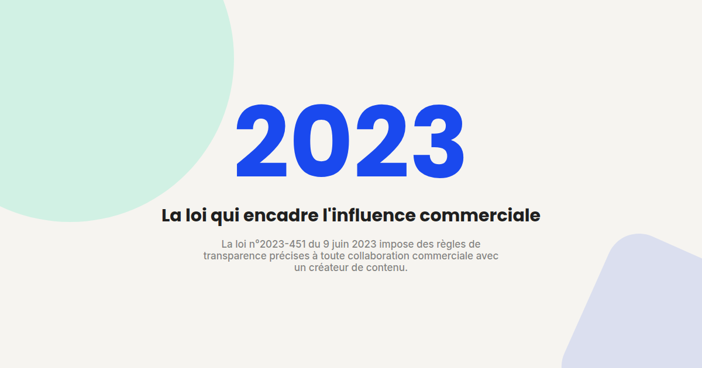

Marketing d'influence et UGC : ce que la loi de 2023 a vraiment changé
Le marketing d'influence et l'UGC (contenu généré par les utilisateurs) restent des leviers puissants en B2C — mais depuis 2023, ils s'exercent dans un cadre légal précis, pas seulement déontologique. Voici ce que ça change concrètement pour une marque.

Pendant longtemps, le marketing d'influence en France s'est appuyé sur des recommandations déontologiques de l'ARPP (Autorité de Régulation Professionnelle de la Publicité), sans réelle portée contraignante. La loi n°2023-451 du 9 juin 2023 a changé cette donne en créant un cadre légal opposable, avec des obligations précises pour les créateurs de contenu comme pour les marques qui travaillent avec eux.
Ce que la loi impose concrètement
- Une mention de transparence systématique et visible. Toute promotion de produit, service ou cause dans le cadre d'un partenariat doit porter la mention « Publicité » ou « Collaboration commerciale », affichée de façon claire et lisible pendant toute la durée du contenu — pas seulement en description ou en hashtag noyé parmi d'autres.
- Un contrat écrit obligatoire entre l'influenceur, son éventuel agent, et l'annonceur, avec un contenu minimum défini par la loi : rémunération, contreparties, droits d'usage du contenu.
- Des catégories de produits interdites à la promotion par un influenceur, notamment certains produits financiers spéculatifs et certaines pratiques médicales ou esthétiques à risque.
Pourquoi ça concerne directement la marque, pas seulement le créateur
C'est le point le moins bien compris par les marques : la responsabilité en cas de manquement ne repose pas uniquement sur le créateur de contenu. Une marque qui commandite une collaboration sans mention de transparence, ou sans contrat conforme, s'expose elle aussi aux sanctions prévues par la loi. Le brief donné au créateur doit donc explicitement intégrer ces obligations, pas seulement les éléments créatifs de la campagne.
Ce que ça change pour la stratégie UGC
- Le contenu généré par un client satisfait, spontané et non rémunéré, n'entre pas dans le champ de cette loi — la distinction entre UGC organique et collaboration rémunérée doit rester claire dans la façon dont la marque le sollicite et le réutilise.
- Un UGC repris et rémunéré a posteriori (contenu initialement spontané, puis payé pour être republié en publicité) bascule dans le champ de la loi au moment où il devient une collaboration commerciale — la mention de transparence doit alors s'appliquer à cette réutilisation.
- La documentation du consentement et de l'accord contractuel devient une pièce à conserver, pas seulement une formalité : c'est elle qui prouve la conformité en cas de contrôle.
Ce qu'il faut mettre en place concrètement
Un brief type de collaboration devrait désormais intégrer systématiquement : la mention de transparence à afficher, la durée d'affichage exigée, les catégories de produits concernées si applicable, et une clause de contrat conforme au cadre minimal fixé par la loi. Ce n'est plus une option de bonne pratique — c'est devenu un prérequis légal, avec la marque comme partie prenante de la conformité.
FAQ
Un simple avis client posté spontanément est-il concerné par cette loi ?
Non, tant qu'il n'y a pas de rémunération ni d'accord commercial derrière. La loi s'applique aux collaborations commerciales, pas au contenu spontané non sollicité et non rémunéré.
Que risque une marque qui ne respecte pas ces obligations ?
La loi prévoit des sanctions qui peuvent toucher à la fois le créateur de contenu et l'annonceur, la marque étant considérée comme partie prenante de la collaboration commerciale.
La mention '#ad' ou '#sponso' suffit-elle légalement ?
La loi demande une mention explicite et clairement lisible telle que « Publicité » ou « Collaboration commerciale », affichée pendant toute la durée du contenu — un hashtag seul, surtout noyé parmi d'autres, est un usage à risque plutôt qu'une conformité garantie.
Une stratégie UGC ou influence à sécuriser juridiquement et à structurer ?
Pour aller plus loin, voir la page SMA.
À lire aussi : TikTok Ads B2C : le funnel qui fonctionne en 2026 et YouTube Ads : capter l'attention dans les 5 premières secondes.
Pour continuer sur ce sujet.